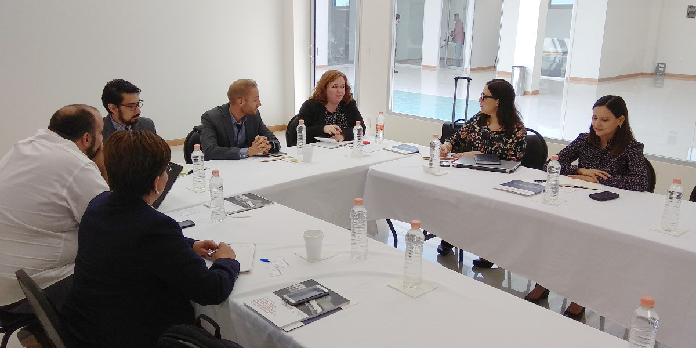

Representantes de la Agencia de los Estados Unidos para el Desarrollo Internacional (USAID) sostuvieron una productiva reunión con la Secretaria Técnica e integrantes del Consejo de Participación Ciudadana
Sistema Anticorrupción del Estado de Coahuila. Consejo de Participación Ciudadana.
Saltillo, Coahuila.- Representantes de la Agencia de los Estados Unidos para el Desarrollo Internacional (United States Agency for International Development, USAID) sostuvieron una productiva reunión de trabajo que fue presidida por la secretaria técnica de la Secretaría Ejecutiva del Sistema Anticorrupción de Coahuila, Marcela Castañeda Agüero y con integrantes del Consejo de Participación Ciudadana.
En la sesión que se llevó a cabo en Saltillo, el viernes 4 de mayo de 2018, estuvieron los consejeros Manuel Gil Navarro, presidente del CPC y las consejeras Ana Yuri Solís Gaona y Lourdes de Koster López.
Por parte de la agencia norteamericana USAID, que promueve proyectos de transparencia y en apoyo para la implementación del Sistema Nacional Anticorrupción en México y sus sistemas equivalentes en el ámbito estatal, acudieron Jeremy Williammee, director de Integrity and Transparency Office; Vanessa Reilly, asesora en Transparencia y Manuel Silva Coache, especialista en Anticorrupción y responsable del Proyecto "Promoviendo la Transparencia en México".
Entre los acuerdos sobresale la propuesta de USAID para iniciar trabajos conjuntos con la Secretaría Ejecutiva del Sistema Anticorrupción de Coahuila y el Consejo de Participación Ciudadana, con el fin de fortalecer los esquemas de capacitación presencial o en línea, desarrollo de mecanismos de comunicación para facilitar la implementación del Sistema, así como el desarrollo de técnicas y asesorías para la generación de un análisis de riesgo de corrupción en Coahuila, entre otras propuestas de colaboración que fortalezcan la consolidación del Sistema Anticorrupción en la entidad.
Cabe mencionar que los representantes de USAID resaltaron los avances que registra el Sistema Anticorrupción en Coahuila, por lo que ofrecieron respaldar proyectos que puedan contribuir al trabajo iniciado en esta entidad, para promover prácticas que permitan la erradicación de esta problemática que afecta a los estados del país.

